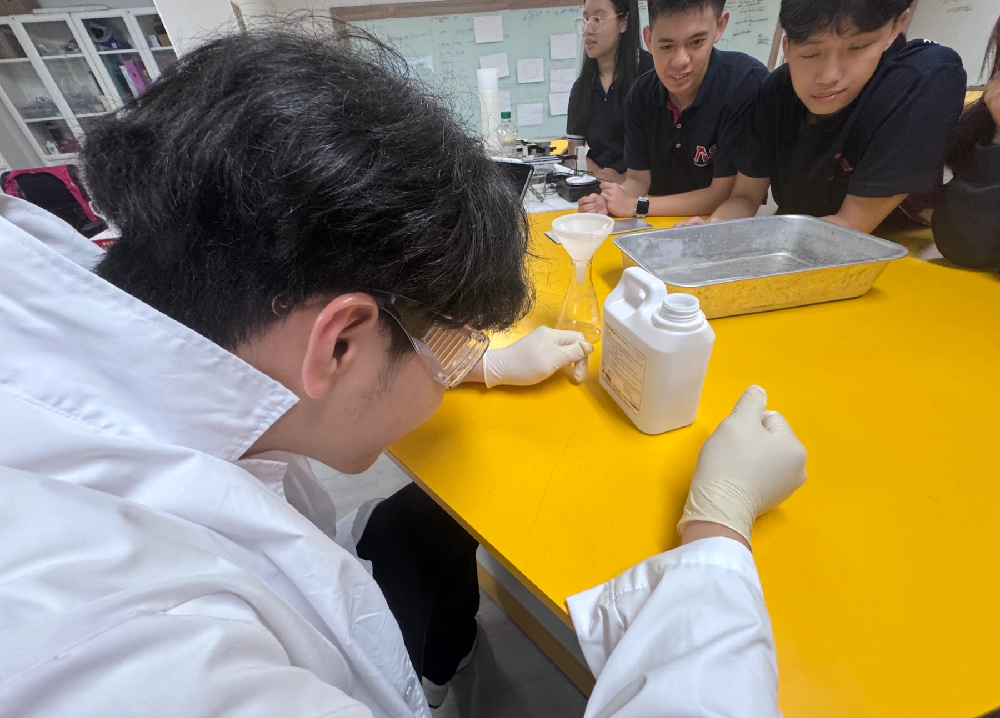
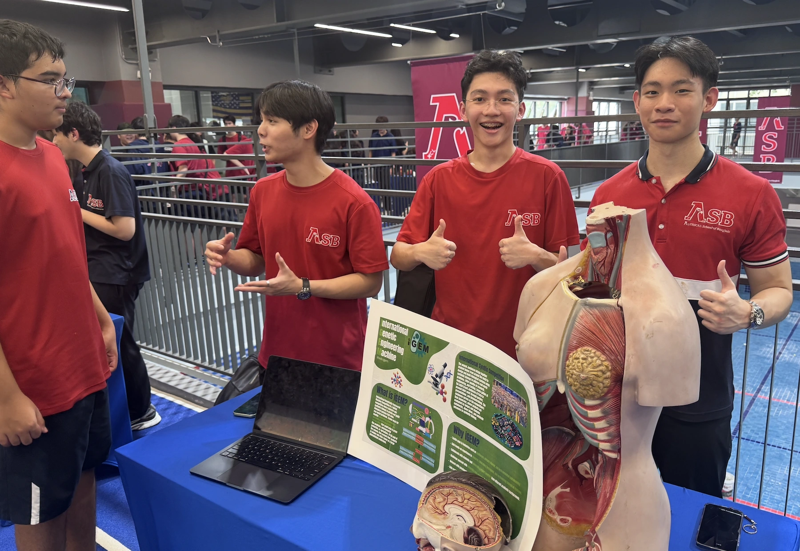

High school education
Cycle 1
High school is a time when students begin to explore pathways and discover where their interests can take them. Here at the American School of Bangkok, we have a large student body interested in STEM, biology, and laboratory work. Our iGEM team serves as a bridge between students and opportunities to gain hands-on laboratory experience. In the first cycle of our educational journey, we completed Chulalongkorn University’s Laboratory Biosafety course in preparation for our iGEM wet-lab phase. Through the course, we learned the importance of PPE, including lab coats, gloves, and eye protection; laboratory access and safety procedures; aseptic and good microbial techniques; proper disinfection and sterilization; emergency procedures; and chemical safety. We then applied these principles in our work at Chulalongkorn University, where only trained personnel conduct experiments and work surfaces and equipment are disinfected before and after use.
Cycle 2

View full sizeThen we adapted the knowledge we gained into a student-friendly lesson at our school laboratory. Although we lacked the equipment needed to demonstrate advanced biosafety procedures directly, we designed a simple experiment that emphasized the fundamentals of good laboratory practice, including proper PPE, safe chemical handling, aseptic technique, accurate measurement, workspace organization, and waste disposal. Through a yeast-based elephant toothpaste experiment, students could practice measuring materials, following experimental procedures, and maintaining a safe workspace while applying the principles from our biosafety crash course.
The iGEM club
On top of that, in the spirit of creating an environment where students can explore their interests in biology, we transformed the iGEM team into a club that students can join each year. Every current member becomes a mentor for the incoming cohort, passing on the experience and skills we have developed while recruiting students who have shown a strong interest in science. The club meets every Tuesday after school in the biology lab.
Rather than lecturing students on CRISPR-Cas9 or prescribing a particular research direction, we give them the foundation to explore independently. After teaching the basics of gene editing, transcription, and translation, we introduce them to iGEM’s different villages and help them explore the areas that interest them. Through open discussions and brainstorming sessions, students develop and challenge their own ideas for the next iGEM project rather than simply following the pathway of the previous team.
This was especially significant because iGEM became ASB’s only research-based student club and, in the school’s 45-year history, its first club dedicated to synthetic biology. We pitched the club framework directly to the school, which supported us by funding the resources needed for both our current research and the next iGEM cohort.
More importantly, iGEM has helped shift how ASB approaches student-led research. Seeing students take an idea from the classroom into an actual research project has encouraged the school to invest more in student-led initiatives and independent exploration. We want to show future students that they can pursue ideas beyond the classroom and create tangible change with the right guidance, mindset, and resources. That is what we hope to build through iGEM.

View full size